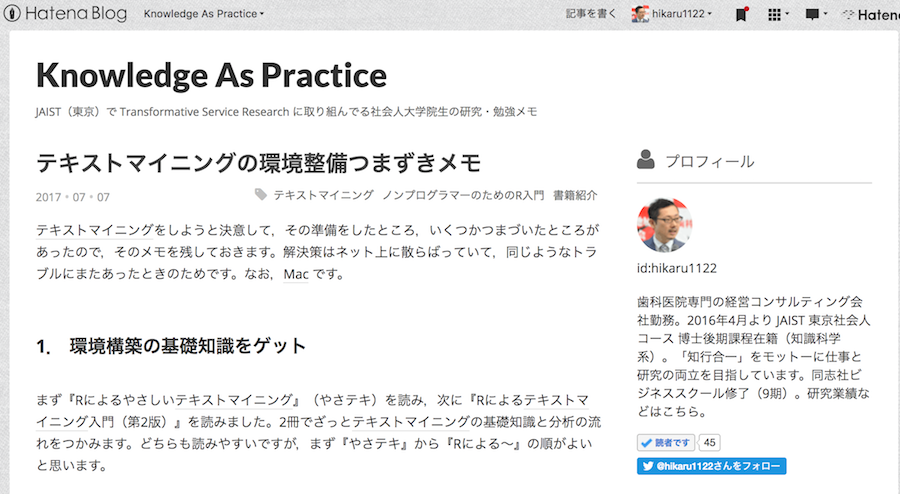
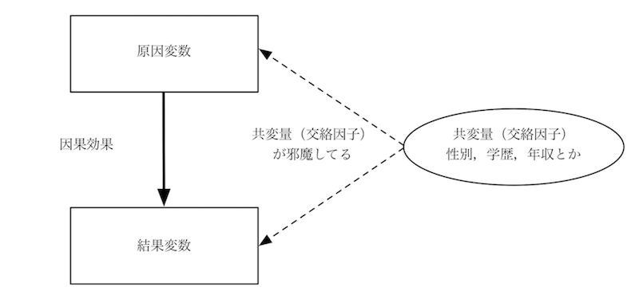
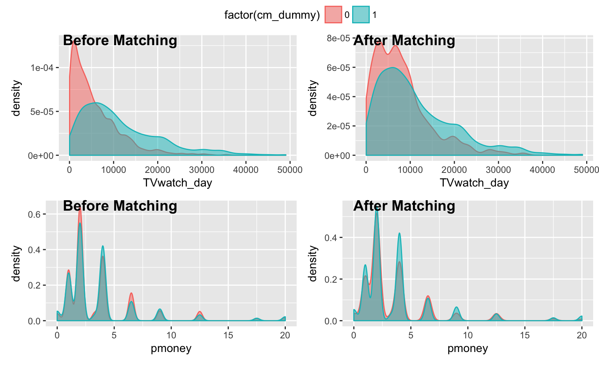

Hikaru Goto
＠hikaru1122

CI_data = read_csv("/Users/hikaru1122/Dropbox/06-blog/kazutanR/20170730/q_data_x.csv")
CI_data %<>% select(-gamedummy, -area_keihan, -job_dummy8, -fam_str_dummy5, -T:-M3, -gamesecond)
CI_data %>% glimpse()## Observations: 10,000
## Variables: 23
## $ cm_dummy <int> 0, 0, 0, 0, 0, 0, 0, 0, 0, 0, 0, 0, 0, 0, 0, 0...
## $ area_kanto <int> 0, 0, 0, 0, 0, 0, 0, 0, 0, 0, 0, 1, 0, 0, 0, 0...
## $ area_tokai <int> 0, 0, 0, 0, 0, 0, 0, 1, 0, 0, 0, 0, 0, 0, 0, 0...
## $ area_keihanshin <int> 1, 0, 0, 0, 0, 0, 1, 0, 0, 0, 0, 0, 1, 0, 1, 1...
## $ age <dbl> 44.5, 34.5, 24.5, 44.5, 34.5, 24.5, 19.0, 54.5...
## $ sex <int> 1, 1, 1, 1, 1, 0, 0, 0, 1, 1, 1, 1, 1, 0, 0, 1...
## $ marry_dummy <int> 1, 1, 0, 1, 1, 0, 0, 1, 1, 0, 1, 1, 0, 0, 1, 1...
## $ job_dummy1 <int> 1, 1, 0, 1, 1, 0, 0, 1, 1, 1, 1, 1, 0, 0, 0, 1...
## $ job_dummy2 <int> 0, 0, 0, 0, 0, 1, 0, 0, 0, 0, 0, 0, 0, 0, 0, 0...
## $ job_dummy3 <int> 0, 0, 0, 0, 0, 0, 0, 0, 0, 0, 0, 0, 1, 0, 0, 0...
## $ job_dummy4 <int> 0, 0, 0, 0, 0, 0, 0, 0, 0, 0, 0, 0, 0, 0, 0, 0...
## $ job_dummy5 <int> 0, 0, 0, 0, 0, 0, 0, 0, 0, 0, 0, 0, 0, 0, 1, 0...
## $ job_dummy6 <int> 0, 0, 0, 0, 0, 0, 0, 0, 0, 0, 0, 0, 0, 0, 0, 0...
## $ job_dummy7 <int> 0, 0, 1, 0, 0, 0, 1, 0, 0, 0, 0, 0, 0, 1, 0, 0...
## $ inc <dbl> 249.5, 800.0, 0.0, 800.0, 749.5, 103.0, 0.0, 4...
## $ pmoney <dbl> 0.0, 12.5, 2.0, 2.0, 4.0, 3.3, 1.0, 4.0, 2.0, ...
## $ fam_str_dummy1 <int> 0, 0, 0, 0, 0, 0, 1, 1, 0, 1, 0, 0, 0, 1, 0, 0...
## $ fam_str_dummy2 <int> 0, 0, 0, 0, 0, 0, 0, 0, 0, 0, 0, 0, 0, 0, 0, 0...
## $ fam_str_dummy3 <int> 1, 1, 0, 1, 1, 0, 0, 0, 1, 0, 1, 1, 1, 0, 1, 1...
## $ fam_str_dummy4 <int> 0, 0, 1, 0, 0, 0, 0, 0, 0, 0, 0, 0, 0, 0, 0, 0...
## $ child_dummy <int> 1, 1, 0, 1, 1, 0, 0, 0, 1, 0, 1, 1, 0, 0, 0, 0...
## $ TVwatch_day <dbl> 33.42760, 31.54286, 37.82581, 36.34591, 49.344...
## $ gamecount <int> 0, 0, 0, 0, 0, 0, 0, 0, 0, 0, 0, 0, 0, 0, 0, 0...
cm_dummy = CI_data$cm_dummy==1 # 論理ベクトル
library(randomForest)
rf = randomForest(cm_dummy ~ ., data = CI_data, proximity = TRUE) # 1分くらいかかるprox = rf$proximity - diag(nrow(rf$proximity)) # 何やってるの？
prox.true = prox[cm_dummy, !cm_dummy]
untre.samples = apply(prox.true, 1, which.max)
tre = CI_data[cm_dummy,] # 処置群のみ取り出し
untre = CI_data[!cm_dummy,] # 対照群のデータのみ取り出し
untre.samples2 = unique(untre.samples)
untre2 = untre[untre.samples2,]
whole.sample.u = rbind(tre, untre2)
lm(gamecount ~ ., data = whole.sample.u) %>% tidy() %>% formattable()| term | estimate | std.error | statistic | p.value |
|---|---|---|---|---|
| (Intercept) | 4.646772e+01 | 7.4627507299 | 6.22662091 | 5.112359e-10 |
| cm_dummy | 5.080259e+00 | 1.4994688310 | 3.38803926 | 7.087920e-04 |
| area_kanto | -3.428637e+00 | 2.0417768929 | -1.67924189 | 9.316065e-02 |
| area_tokai | -5.561221e+00 | 2.2609428165 | -2.45969098 | 1.393565e-02 |
| area_keihanshin | -1.127876e-01 | 2.3905441280 | -0.04718073 | 9.623709e-01 |
| age | -2.616971e-01 | 0.0820319685 | -3.19018408 | 1.429659e-03 |
| sex | 1.162869e+01 | 1.8414513774 | 6.31496153 | 2.910149e-10 |
| marry_dummy | -1.766812e+00 | 2.4320186687 | -0.72647969 | 4.675751e-01 |
| job_dummy1 | 3.259929e+00 | 4.4459059483 | 0.73324282 | 4.634410e-01 |
| job_dummy2 | 9.701438e+00 | 4.8231486118 | 2.01143246 | 4.432758e-02 |
| job_dummy3 | -1.893788e-01 | 4.4267752893 | -0.04278032 | 9.658782e-01 |
| job_dummy4 | -2.574505e+00 | 6.7318160379 | -0.38243841 | 7.021507e-01 |
| job_dummy5 | 1.346178e+01 | 4.2022687235 | 3.20345488 | 1.365494e-03 |
| job_dummy6 | 1.074076e+01 | 4.4357127824 | 2.42142881 | 1.549117e-02 |
| job_dummy7 | 4.023104e+00 | 5.3501887803 | 0.75195559 | 4.521093e-01 |
| inc | 1.582472e-03 | 0.0048104142 | 0.32896789 | 7.421922e-01 |
| pmoney | -3.366640e-01 | 0.2264032428 | -1.48701055 | 1.370683e-01 |
| fam_str_dummy1 | -4.010306e+01 | 5.8403492486 | -6.86655167 | 7.289015e-12 |
| fam_str_dummy2 | -4.279805e+01 | 6.1441641716 | -6.96564171 | 3.644391e-12 |
| fam_str_dummy3 | -4.112481e+01 | 5.7650045512 | -7.13352665 | 1.102236e-12 |
| fam_str_dummy4 | -3.813427e+01 | 6.3682972350 | -5.98814174 | 2.254353e-09 |
| child_dummy | 3.803233e+00 | 2.1011258402 | 1.81009314 | 7.033488e-02 |
| TVwatch_day | -2.443405e-04 | 0.0000805049 | -3.03510107 | 2.415586e-03 |
| 平均因果効果 | |
|---|---|
| 岩波DS vol.3 | 5.32 |
| 岩波DS vol.3 IPW | 2.31 |
| RF で IPW @ nakamichi | 5.32 |
| Proximity でマッチング | およそ 5 |